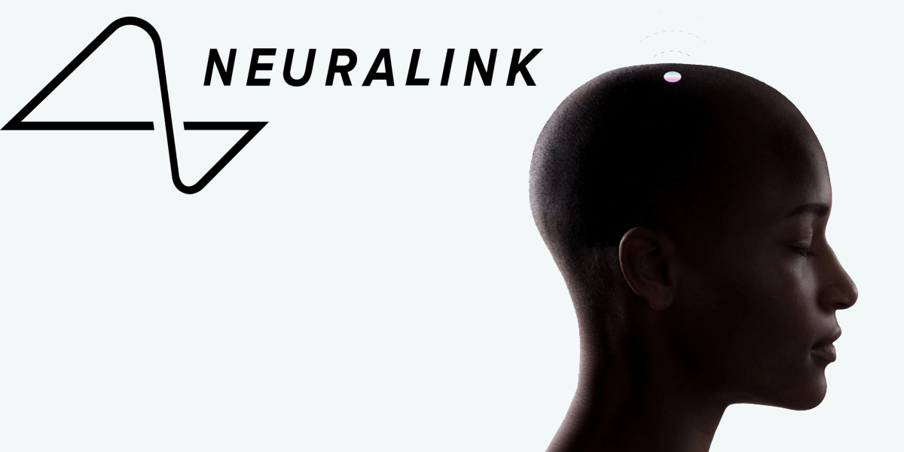

Proyectos de Elon Musk
Descubre los proyectos revolucionarios en los que ha trabajado Elon Musk.
Hyperloop
Hyperloop es un concepto de transporte terrestre de alta velocidad, propuesto por Elon Musk en 2013. Se basa en cápsulas que viajan a través de tubos a baja presión, lo que permitiría velocidades mucho mayores que las de los trenes convencionales. Musk ha alentado a otras empresas a desarrollar y construir sistemas Hyperloop.

Neuralink
Neuralink es una empresa de neurotecnología cofundada por Elon Musk en 2016. Su objetivo es desarrollar interfaces cerebro-máquina que permitan la comunicación directa entre el cerebro humano y dispositivos electrónicos. Se espera que estas interfaces tengan aplicaciones en la medicina y el tratamiento de enfermedades neurológicas.
